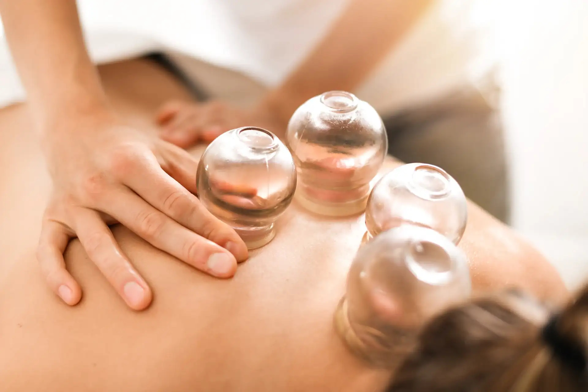

Utilisée depuis des siècles partout dans le monde, la ventouse permet réguler la circulation de Qi et de Sang. Elle contribue à ouvrir les pores de la peau en facilitant l’extraction des facteurs pathogènes à travers celle-ci. L’aspiration à faible pression des ventouses stimule les vaisseaux capillaires sous-cutanés ce qui assure un apport suffisant de nutriments aux tissus et muscles, renforce le pouvoir de renouvellement de la peau et sa résistance aux diverses atteintes externes.
L’utilisation des ventouses est très efficace sur divers troubles respiratoires (toux, rhume, asthme…) rhumatismaux, névralgie, sciatique, douleurs dorsales, dermatologiques (eczéma, psoriasis…) digestifs (constipation…) gynécologiques (douleur) ou dans les cas de céphalées et migraines à répétition mais aussi les tendinites, entorses…
Déroulement d’une séance de soins aux ventouses
Après préparation du corps par massage Tuina, les ventouses sont appliquées sur une peau préalablement huilée et sur les zones et points spécifiques du corps suivant vos besoins.
A l’aide d’une pompe, l’air à l’intérieur des ventouses est aspiré ce qui permet à celles ci d’adhérer à la peau par un effet de succion.
La pose de ventouses n’est pas douloureuse ; une sensation d’étirement et d’échauffement de la peau peut se faire sentir.
La formation d’anneaux ou « d’ecchymoses » sur la peau peut apparaître après la séance.
Ces traces disparaîtront au bout de quelques jours.
Au fur et à mesure des séances, ces phénomènes s’estomperont.